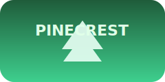
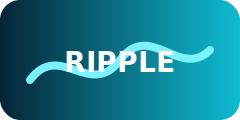
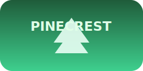
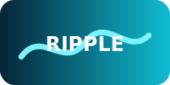

Want to Sponsor?
Our sponsors make it possible for us to give our prospective developers, designers, and builders the opportunity to build for social good. Hackers make meaningful connections with our sponsors beyond just the hackathon weekend.
Sign Up As a Sponsor